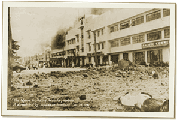

|
j
a v a s c r i p t |
December 25, 1941 — Christmas Day
The fronts are active with “heavy fighting” up north. Our lines there are said to be “holding” but the enemy continues to land reinforcements north and south. Atimonan is behind a mountain range so progress will be slow. Was told that some of our tanks and troops went south to block them last night.

The Myers Building in the Port Area burns. Another bomb in the intersection of Boston and 13th Streets claims a victim.
Japanese planes made monkeys of us again today. Two flights of nine planes at no more than 5,000-feet circled Manila at leisure and bombed the Port Area. We fired no shells nor put any planes up. In truth we don’t have many left. Toured the place by bike with Maurice at 1600, finding surprisingly light damage outside the Myers Building. A few duds went through the Quartermaster’s roof and broken glass carpeted 13th Street. HONGKONG has FALLEN! News that Wake was also overrun after a brave fight startled us. This, on the 18th day of war when by past plans the U.S. fleet should be arriving here! If they can’t sail 2,000-miles in 18-days to defend Wake, they can’t make the 4,767-miles to Manila in 60. Not surprisingly, there was news yesterday of a decision to declare Manila an “Open City.” We are defenseless. I hear that U.S. factories are working over Christmas — a sure sign the U.S. realizes they've been caught way behind the eight-ball. I feel guilty telling Mrs. Connor I was still confident this morning. It was a big white lie, but what else could I have said? |
|
|
|
|